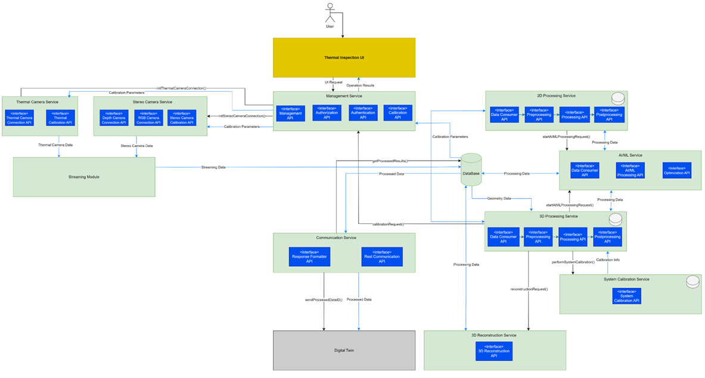
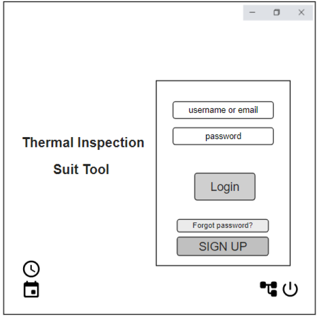
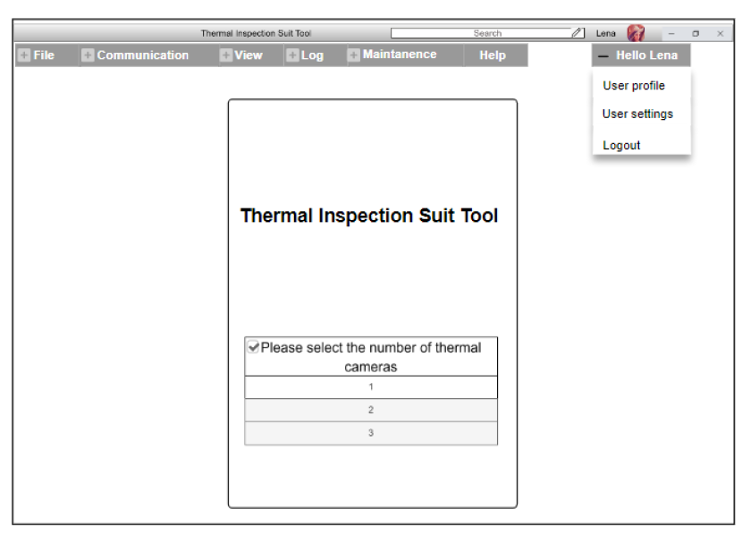
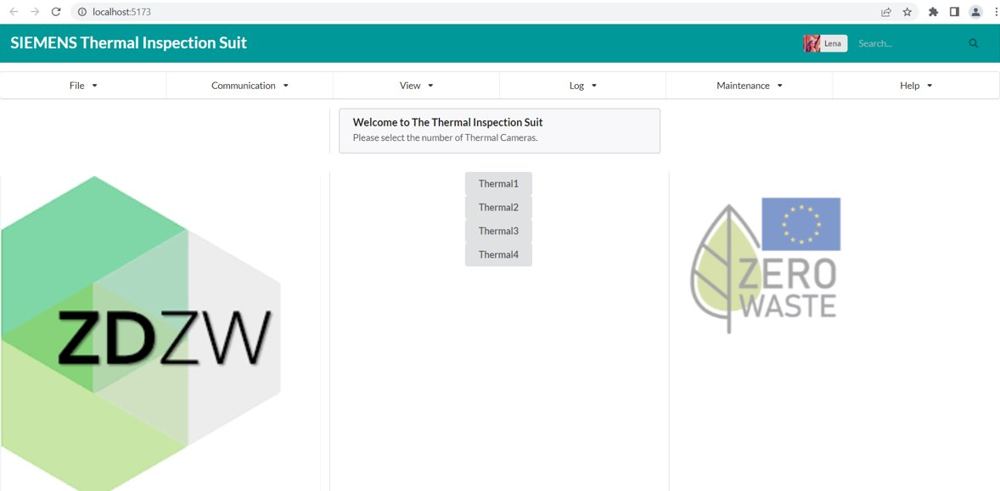
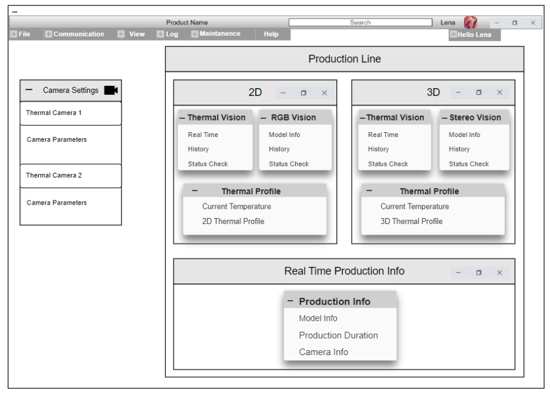
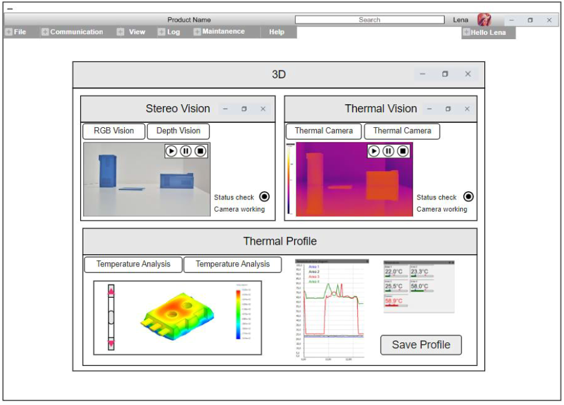
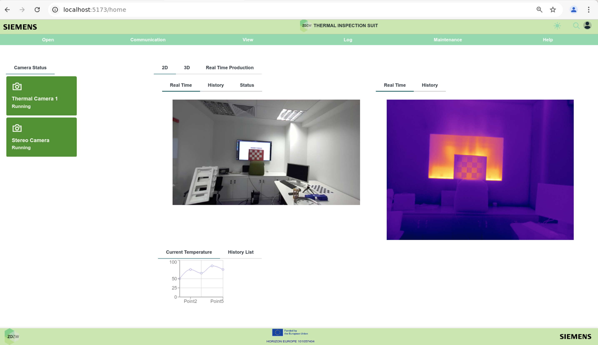

Thermal Inspection for Thermoforming
General Description
Thermal Inspection for Thermoforming is an edge-based application to allow end-users to monitor and process the thermal images of the heated and formed plastic sheets in the thermoforming process. 2D and 3D Thermal profile information of the produced parts will be generated. By analyzing the thermal profile information of the plastic parts by using AI/ML techniques, the anomaly such as thinning, tearing on the produced parts will be detected when it occurs.
The architecture of Thermal Inspection for Thermoforming application is designed by adopting the microservice based approach which allows to create the independently deployable services working in communication with each other. Overall architecture consists of the multiple services such as 2D Processing service, 3D Processing and Reconstruction service, AI/ML service, Communication service, Management service, Calibration service and Data Handling service. This application is also an interoperable application that is capable of communicating with Digital Twin application. The thermal data of the plastic parts which is generated by 2D and 3D processing services of the application will be sent to Digital Twin application to provide the information regarding to the thermal profile distribution of the relevant plastic sheet. Moreover, this application will enable to monitor the camera parameters such as extrinsic and intrinsic parameters, status information, and images from both the stereo and thermal cameras that will contribute to the composition of the image data. Finally, this application will allow the end-users to monitor and identify 2D/3D thermal profile of the produced plastic parts and to detect the defects such as tearing, thinning during in-line inspection of the plastic sheets in thermoforming manufacturing line.
Top Ten Functionalities
1. Computer vision pipeline for thermal image streaming
This part will provide to establish a pipeline for the connection with thermal cameras and thermal data flow for image processing operations.
Associated Function IDs:
- CONSUME_THERMAL_DATA
- CONSUME_STEREO_DATA
- START_2D_PROCESSING
- START_3D_PROCESSING
2. Data handling service for data analysis
This service will enable to process the real-time thermal images and raw data gathered from the thermal cameras.
Associated Function IDs:
- INITIATE_THERMAL_CAMERA
- INITIATE_STEREO_CAMERA
- SHUTTER_CONTROLLING_THERMAL_CAMERA
- STOP_THERMAL_CAMERA
- STOP_STEREO_CAMERA
- START_IMAGE_STREAMING
- STOP_IMAGE_STREAMING
- GET_DEPTH_STEREO_CAMERA
3. 2D Thermal profile identification from thermal images
This service will enable to process the streaming thermal data (thermal image and raw data) to identify two-dimensional thermal profile distribution of the plastic sheets.
Associated Function IDs:
- START_IMAGE_STITCHING
- STOP_IMAGE_STITCHING
- EXTRACT_2D_ROI_THERMAL
- STORE_2D_OUTPUT_DATA
4. 3D Processing and Surface reconstruction from point cloud
3D processing and surface reconstruction service will integrate the data obtained from both the depth camera and thermal camera to construct the three-dimensional object view that incorporates the thermal information. 3D processing and surface reconstruction service will facilitate the generation of three-dimensional objects using point clouds acquired from a depth camera.
Associated Function IDs:
- START_3D_RECONSTRUCTION
- FUSION_3D_AND_THERMAL_DATA
- STORE_3D_OUTPUT_DATA
5. AI model training using thermal image datasets
This part will provide ai and machine learning models training and dataset generation for thermal image processing.
Associated Function IDs:
- TRAIN_2D_ANOMALY_DETECTION_MODEL
- TRAIN_3D_ANOMALY_DETECTION_MODEL
6. Edge based thermal inspection on the heated and formed plastic sheets
The application of IRTI Thermoforming will perform as an edge-based system to facilitate in-plant integration.
Associated Function IDs:
- INITIATE_TRITON_INFERENCE_SERVER
7. AI/ML service development for anomaly detection
AI/ML service will provide ai and machine learning operations regarding to defect detection of the heated and formed plastic parts.
Associated Function IDs:
- START_2D_ANOMALY_PROCESS
- START_3D_ANOMALY_PROCESS
8. UI design for simulation and monitoring
This part will handle the development of web-based UI interface for the application.
Associated Function IDs:
- SHOW_THERMAL_IMAGES
- ACTIVATE_2D_PROCESSING
- ACTIVATE_3D_PROCESSING
- DEACTIVATE_2D_PROCESSING
- DEACTIVATE_3D_PROCESSING
9. Calibration service for thermal and stereo cameras
This service will perform the calibration process to establish the relative position alignment between thermal and depth cameras.
Associated Function IDs:
- DOWNLOAD_AUTO_CALIBRATION_FOR_THERMAL_CAMERA
10. Development of closed-loop communication service with digital twin application
This service will enable to establish the bi-directional communication with Digital Twin application for the notification the thermal profile distribution and detected defects on the plastic sheets to Digital Twin App.
Associated Function IDs:
- FETCHING_THERMAL_PROCESS_ID_FROM_DT
- SENDING_THERMAL_PROCESS_STATUS_TO_DT
- HEARTBEAT_SEND_TO_DT
- HEARTBEAT_RECEIVE_FROM_DT
- RAISE_ALARM
Architecture Diagram

The application consists of several services and components:
- Thermal Inspection GUI: Graphical user interface for the application (front end).
- Thermal Camera Service: This service handles to receive the thermal raw data from thermal cameras and to transmit the thermal data to the corresponding services.
- Stereo Camera Service: This service is responsible for receiving data from the stereo camera and transmitting the received data between services.
- Management Service: This service aims to achieve efficient coordination of the application and management tasks within authentication, authorization, communication, and calibration to provide smooth operations of the application.
- 2D Processing Service: This service enables to process the thermal images obtained from thermal cameras to generate 2D thermal profile identification. It performs advanced image processing techniques such as filtering and image fusion to gather valuable qualities and improve thermal imaging results.
- 3D Processing Service: This service integrates data from both the depth camera and the thermal camera to construct a 3D object that incorporates thermal information.
- 3D Reconstruction Service: This service facilitates the generation of three-dimensional objects using point clouds acquired from a depth camera.
- System Calibration Service: This service performs the calibration process to establish the relative position alignment between thermal and depth cameras.
- AI/ML Service: This service provides ai and machine learning operations.
- Communication Service: This service enables the communication with DT App.
Image Overview
Add here real screen shots from the apps or mockups from the Software Specification document
App Login Page

Configuration Page
Mockup

Implementation

Home Page
Mockup

Thermal Profile Analysis and Visualization Page
Mockup

Implementation

Hardware Components
| Hardware Component | Count |
|---|---|
| Thermal Camera | 3 |
| Stereo Camera | 1 |
| Edge Device | 2 |
| Training/Inference Server | 1 |
- Thermal Camera : Thermal cameras are used to capture thermal data from the thermoforming line during 2D/3D thermal inspection.
- Stereo Camera : Stereo cameras are used to capture point cloud data from 3D Reconstruction Phase.
- Edge Device : Edge device is used to execute specific microservices which are running custom algorithms.
- Training/Inference Server : The training/inference server is used to serve the APIs that perform the training / inference on the AI models.
Computation Requirements
Computational Requirements for Edge Device / Edge Box:
| Recommended | |
|---|---|
| OS | Ubuntu Linux 22.04 LTS, x86_64 architecture |
| CPU | Intel Core i5-10th Gen or higher |
| RAM | 64 GB DDR4 3000MHz Memory or higher |
| STORAGE | 1TB PCIe M.2 NVMe SSD for OS |
| GPU | NVIDIA GeForce RTX 3090 384-bit 24GB GDDR6X (Ampere) |
| PERIPHERALS | USB 2.0 Bus x2, USB 3.2 x1 |
Computational Requirements for Training and Inference Server:
| Recommended | |
|---|---|
| OS | Ubuntu Linux 22.04 LTS, x86_64 architecture |
| CPU | Intel Core i7-10th Gen or higher |
| RAM | 128 GB DDR4 3000MHz Memory or higher |
| STORAGE | 1TB PCIe M.2 NVMe SSD for OS |
| GPU | 4 x NVIDIA RTX A5000 24GB GDDR6 with ECC memory (Ampere) |
| PERIPHERALS | USB 2.0 Bus x2, USB 3.2 x1 |
Installation Procedure
Step by step on how to install the application: * Standalone * In the Kubernetes platformm using helm charts: description of the different options
How To Use
Step by step on how to use the application